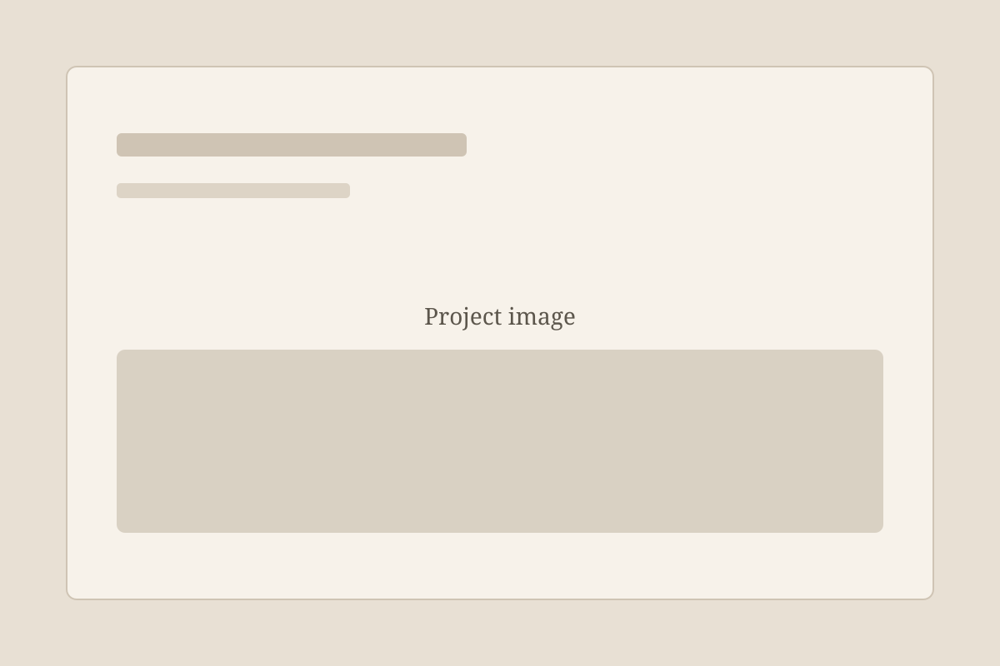

Purdue Forestry and Natural Resources (FNR)
Summary
Legacy university websites and PDF resources often suffer from outdated designs,
severe ADA compliance issues, broken links, and editorial inaccuracies, which
hinder access to critical academic information. As a student web designer and
developer, I modernized and maintained key university digital assets by migrating
legacy faculty sites to accessible, responsive layouts, auditing assets for
WCAG/ADA compliance, writing engaging event posts, and systematically resolving
technical and content bugs to ensure a seamless experience for students and faculty.
Outdated university pages and non-compliant PDFs create frustrating accessibility
barriers and poor user experiences for students and faculty. I modernized current and
legacy academic sites into accessible, responsive web pages while actively remediating
PDFs for ADA compliance, drafting event posts, and resolving site-wide content and
link errors to create a seamless digital experience.
Outcomes
- Dr. Clement P. Bataille SAiVE Lab Website
- Dr. Maria S. Sepúlveda Sepúlveda Lab website
- PDF ADA compliance (e.g. professor CVs)
- Wood Research Lab Safety Manuals
Images
